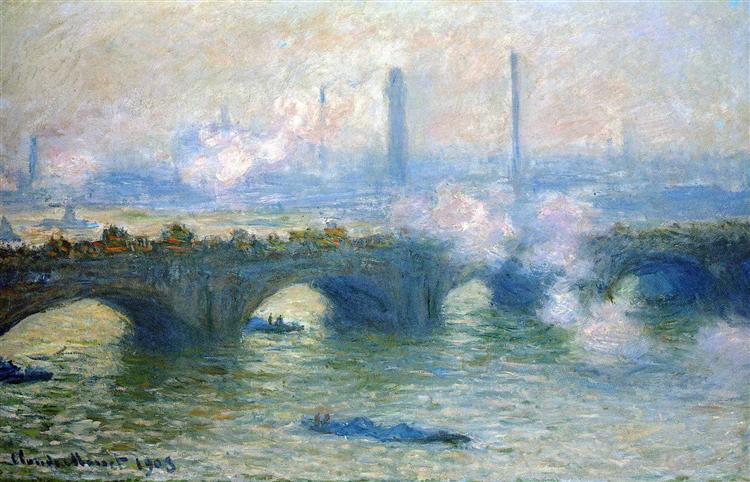

"Museum" From 18th to 20th Century

St. Paul's Cathedral
With 7 Locations
Across 220 Years
Step into London through iconic artworks.
From Canaletto's St. Paul's Cathedral to Ginner's Piccadilly Circus, explore the city's landmarks and hidden corners.
Discover how each piece reflects London's history, culture, and evolving artistic styles with our interactive map and timeline.
Walk with us through a century of London, accompanied by music — if you will.

Waterloo Bridge, Claude Monet, 1903
Click any marker to see the artwork, or open the full map →
St. Paul's Cathedral